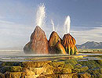

<p><a href="/GL/Khoa-hoc/2008/11/3BA08850/">Những hình ảnh kỳ   vĩ của thiên nhiên</a>   <br />
    <label></label>
</p>
<p>Gió Mặt trời, động băng, tháp đá vôi, sông trên đảo băng là những kỳ quan do   thiên nhiên tạo ra. Dưới đây là 10 hình ảnh ấn tượng về những kiệt tác này.</p>

